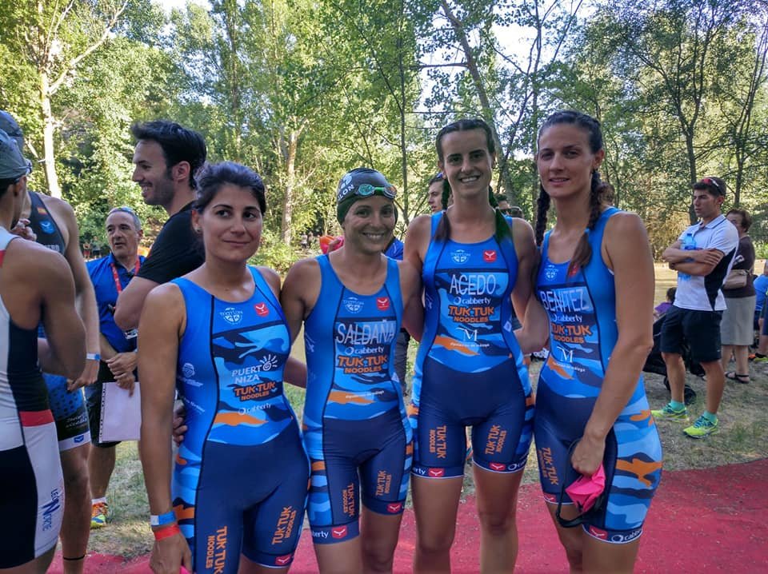

Escrito por Iker Roca | 21 de mayo de 2024
El club Triatlón Rincón ha alcanzado un hito significativo al proclamarse subcampeón de España de Triatlón Cross en la competencia celebrada en Almazán. Este logro destaca el arduo trabajo y la dedicación del equipo, que ha sabido enfrentarse a una de las pruebas más exigentes del circuito nacional.
La competición tuvo lugar en Almazán, una localidad conocida por su terreno variado y desafiante, ideal para el triatlón cross. Los participantes tuvieron que superar un recorrido que incluyó natación en aguas abiertas, ciclismo de montaña y una carrera a pie por senderos naturales.
El club Triatlón Rincón se destacó desde el inicio, con un rendimiento sólido en todas las etapas de la competencia. La cohesión y el espíritu de equipo fueron fundamentales para alcanzar este resultado, demostrando que la preparación y la estrategia son clave en el éxito deportivo.
Entre los atletas del club, varios nombres brillaron con luz propia. Pedro Sánchez, uno de los triatletas más experimentados del equipo, logró un tiempo excepcional en el segmento de ciclismo, mientras que María López, una de las promesas jóvenes del club, impresionó con su desempeño en la carrera a pie, manteniendo un ritmo constante y firme hasta el final.
Ambos atletas, junto con el resto del equipo, contribuyeron de manera significativa a la posición final del club en la clasificación general. "Este subcampeonato es el resultado del esfuerzo colectivo y la dedicación de cada uno de los miembros del equipo", comentó Sánchez tras la competencia.
El éxito del club Triatlón Rincón no es casualidad. La preparación para esta competición ha sido meticulosa, con meses de entrenamiento específico y planificación estratégica. Los entrenadores han trabajado de cerca con los atletas para optimizar su rendimiento en cada una de las disciplinas del triatlón cross.
La estrategia implementada durante la competencia también jugó un papel crucial. El equipo supo gestionar sus fuerzas y mantener la concentración en todo momento, lo que les permitió superar las dificultades del terreno y las condiciones climáticas variables.
Con este subcampeonato, el club Triatlón Rincón refuerza su posición como uno de los equipos más fuertes y prometedores del país. Los miembros del equipo ya están enfocados en sus próximos objetivos y competiciones, con la mirada puesta en alcanzar nuevos éxitos y seguir creciendo como grupo.
La comunidad del triatlón y los aficionados locales han celebrado este logro con entusiasmo, reconociendo el talento y la dedicación de los atletas del club. Sin duda, el futuro del Triatlón Rincón luce brillante, y este subcampeonato es solo el comienzo de muchos más triunfos por venir.
Las redes sociales y los medios locales se han llenado de mensajes de felicitación y apoyo para el club Triatlón Rincón. Las autoridades deportivas de la región también han expresado su orgullo y han reiterado su compromiso de seguir apoyando el desarrollo del triatlón en la comunidad.
El presidente del club, José Martínez, manifestó su agradecimiento a todos los que han apoyado al equipo y aseguró que seguirán trabajando con la misma pasión y dedicación. "Este es un logro de todos, y seguiremos dando lo mejor de nosotros en cada competencia", concluyó Martínez.
Referencia: Federación Española de Triatlón.